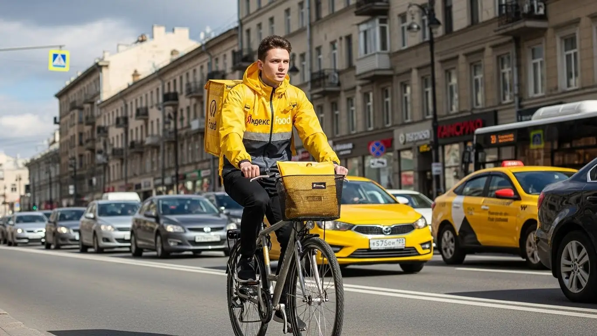
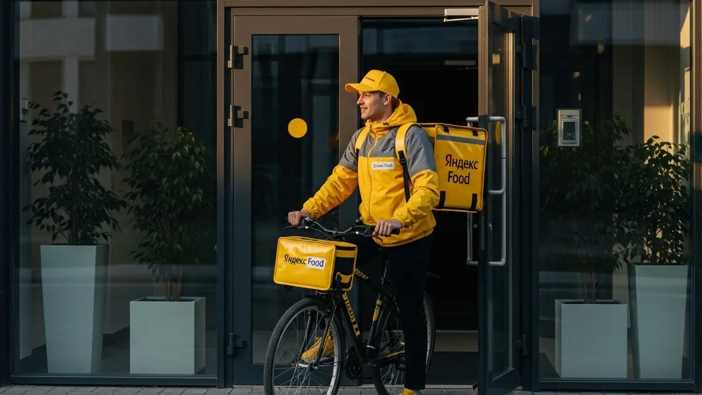

Работа курьером Яндекс Еды в Брянске: доход и условия в 2025-2026

- Работа курьером Яндекс Еды в Брянске: для кого эта вакансия и что вы получите
- Сколько вы будете зарабатывать курьером в Брянске: калькулятор дохода и разбор выплат
- Реальный заработок курьера в Брянске: смены и месячный доход
- График работы и форматы занятости
- Требования к кандидату и документы
- Самозанятость, налоги и юридическая чистота
- Пошаговое оформление и первый выход на линию в Брянске
- Пешком, на вело или на авто: что выгоднее в Брянске
- Районы, маршруты и «топовые» зоны заказов в Брянске
- Безопасность, страховка, штрафы и оплата простоя
- Плюсы и возможные минусы работы курьером в Брянске
- Реальные истории и отзывы курьеров из Брянска
- Ответы на главные вопросы о работе курьером Яндекс Еды в Брянске
- Короткие ответы на главные вопросы
- Итоги и ваш следующий шаг
Все города
Думаешь, стоит ли в Брянске крутить педали или жечь бензин с жёлтой сумкой за спиной? Смотришь на красивые цифры в рекламе и прикидываешь, как быстро отобьёшь затраты, но боишься «убить» подвеску на наших дорогах, застрять в вечной пробке на Авиационной или получить копейки за заказ на другой конец города. Давай начистоту: это не рекламная замануха, а честный разговор о том, что такое работа курьером Яндекс Еды в Брянске на самом деле.
Понять «внутрянку» нужно до того, как ты выйдешь на первый заказ, чтобы через месяц не проклинать всё на свете, глядя на чистый доход. Потому что заработок — это не просто сумма за доставки. Это минус расходы на бензин или запчасти для велика, минус налог 6%, минус время, потраченное впустую. Большинство новичков в Брянске не понимают, как работает приоритет, чем доставка в Советском районе отличается от заказов в Бежице, и в итоге теряют деньги на пустых пробегах и низком рейтинге. Чтобы сразу оценить все детали, включая требования и форму заявки, можно изучить сводку про работу курьером Яндекс Еда в Брянске на официальной странице для партнёров.
В этом гиде мы разберём всё по косточкам. Посчитаем, сколько чистыми выходит за смену у пешего, вело- и автокурьера именно в брянских реалиях. Я покажу на карте, в каких районах всегда есть заказы, а куда лучше не соваться в час пик. Расскажу, как наша погода — от зимней каши до летнего пекла — влияет на заработок, за что реально штрафуют и как этого избежать. Мы не будем обходить острые углы — только факты и цифры.
Меня зовут Алексей. Я сам не один год откатал по Брянску с жёлтой сумкой, а сейчас у меня свой небольшой таксопарк-партнёр, так что я вижу эту кухню с двух сторон. Никакой воды и рекламной шелухи, только опыт, который поможет тебе не наступать на чужие грабли и сразу начать зарабатывать. Так что присаживайся поудобнее, сейчас всё разложу по полочкам.
А чтобы тебе было проще сориентироваться, вот короткий гид по ключевым темам статьи.
Что ты точно узнаешь из этого разбора по Брянску
В этой статье ты ТОЧНО узнаешь:
- Сколько РЕАЛЬНО можно заработать в Брянске за смену пешком, на велике и на авто, уже за вычетом расходов?
- В каких районах Брянска — от центра до Бежицы — и в какое время суток больше всего заказов и выше коэффициенты?
- Как правильно выбирать слоты и зоны в «Яндекс Про», чтобы не стоять без дела и получать больше выгодных заказов?
- За что на самом деле могут понизить рейтинг или временно заблокировать, и как этого избежать?
- Как устроена самозанятость, сколько платить налогов и почему это проще и безопаснее, чем работать «всерую»?
- Что такое оплата простоя и как она защищает твой доход, если заказов вдруг стало мало?
А если тебе некогда читать всю статью — переходи сразу к заключению, где ты найдёшь короткие ответы на все эти вопросы и указания, в каких разделах искать подробности.
Для начала — главные цифры и факты о работе в Брянске в одной картинке.
Работа курьером в Брянске: ключевые цифры
Работа курьером Яндекс Еды в Брянске: для кого эта вакансия и что вы получите
Кому подойдёт эта работа в Брянске
Скажу честно: работа курьером в сервисах Яндекса не для всех, но для многих — настоящая находка. В первую очередь, это идеальный вариант для студентов брянских вузов и колледжей. Свободный график можно подстроить под учёбу, выходить на пару часов после пар и зарабатывать на свои расходы, не прося у родителей. Деньги приходят быстро, почти сразу — это большой плюс.
Также это отличный старт для тех, у кого нет опыта. В Яндекс Еде не требуют диплом или резюме на пять страниц. Нужен только смартфон, желание двигаться и ориентироваться в городе. Если ты ищешь подработку к основной занятости, чтобы закрыть кредит или накопить на что-то, — тоже твой вариант. Вышел вечером или в выходные, выполнил несколько заказов, получил живые деньги. Ну и, конечно, для водителей-курьеров на своем авто это возможность превратить машину в источник стабильного дохода.
Главные преимущества для жителей районов Советский, Бежицкий, Володарский
Главный плюс этой работы в Брянске — ты можешь доставлять заказы буквально у себя под окнами. Не нужно тратить час-полтора на дорогу до офиса и обратно. Живёшь, например, в Бежицком районе — выбираешь его в приложении «Яндекс Про» и начинаешь смену. Все заказы будут из местных кафе, ресторанов и магазинов для жителей твоего же района. Ты знаешь здесь каждый двор и короткий путь, а значит, будешь доставлять быстрее и больше зарабатывать.
То же самое касается и других крупных районов города. В Советском районе всегда кипит жизнь, особенно в центре, — заказов от Яндекс Еды и Доставки всегда много. В Володарском или Фокинском районах плотность заказов может быть чуть ниже, но и конкуренция меньше, а расстояния больше, что выгодно для курьеров на автомобиле. Ты не привязан к одному месту и не тратишь деньги на проезд через весь Брянск, чтобы начать работать. Вышел из подъезда — и ты уже на смене.
Краткое обещание по доходу и условиям
Если говорить о деньгах, то цифры по Брянску вполне реальные. При частичной занятости, работая по 3–4 часа в день, можно спокойно получать 1000–1500 рублей. Если же выходить на полную смену, 8–10 часов, то пеший курьер может заработать 2000–2800 рублей, а водитель на своей машине — до 3500–4000 рублей в хороший день. В месяц при полной занятости у самых активных курьеров выходит и 60 000–70 000 рублей.
Ключевые условия работы просты и понятны. Во-первых, свободный график — ты сам решаешь, когда и сколько работать. Во-вторых, ежедневные выплаты на карту — не нужно ждать зарплату месяц. В-третьих, начать можно без опыта, всему научат в процессе. Для официальных выплат нужен статус самозанятого, но его оформление занимает 10–15 минут онлайн через приложение. Это честная сделка: твоё время и усилия в обмен на быстрые и стабильные деньги.
Например, студент БГТУ живёт в Советском районе. После пар он выходит на 3–4 часа как пеший курьер. Работает в основном в центре, где много кафе. За вечер спокойно делает 1200–1400 рублей. Говорит, на жизнь, развлечения и помощь родителям хватает, и при этом учёбу не запускает.
В общем, работа курьером в Яндекс Еде — это гибкий инструмент для заработка в Брянске. Она подходит и как основная занятость, и как временная подработка, позволяя работать рядом с домом и получать деньги каждый день. Совет: если живёшь в большом спальном районе вроде Бежицы, начинай именно там. Ты знаешь все тропинки, а заказов из местных заведений всегда хватает.
Сколько вы будете зарабатывать курьером в Брянске: калькулятор дохода и разбор выплат
Из чего складывается доход курьера
Твой заработок в Яндекс Еде — это не просто фиксированная зарплата, а сумма нескольких частей. Важно понимать, как всё устроено, чтобы влиять на итоговую цифру. Во-первых, есть базовая оплата за каждый выполненный заказ. Во-вторых, к ней добавляется плата за расстояние — чем дальше нести или везти заказ, тем больше денег ты получишь.
Кроме этого, есть повышающие коэффициенты. В часы пик (обед, ужин), в плохую погоду или в зонах с высоким спросом на карте в приложении «Яндекс Про» появляются «фиолетовые» зоны. Заказы из таких зон оплачиваются дороже, иногда в полтора-два раза. Также сервис часто предлагает персональные цели-бонусы: выполнишь, например, 15 заказов за день — получишь сверху приятную доплату. Не забывай про чаевые от клиентов — всё, что они оставляют, идёт тебе в карман.
Есть и два важных момента, которые защищают твой доход. Первое — оплата простоя. Если ты пришёл в ресторан, а заказ ещё не готов, сервис начнёт доплачивать за ожидание. Второе — для пеших курьеров на длинных маршрутах может быть компенсация проезда на общественном транспорте. Это гарантия, что ты не будешь работать в минус.
Как пользоваться калькулятором дохода
Чтобы прикинуть свой возможный заработок, можно использовать простой принцип расчёта, который лежит в основе онлайн-калькуляторов. Ты выбираешь свой город — Брянск, затем указываешь тип доставки: пеший курьер, на велосипеде или на своём авто.
Дальше определяешь, сколько часов в день и сколько дней в неделю планируешь выходить на смены. На основе этих данных можно спрогнозировать примерный диапазон твоего дохода за день и за месяц. Конечно, это прогноз, а не твёрдое обещание — реальная зарплата будет зависеть от спроса, погоды и твоей скорости. Но для планирования и понимания, на что рассчитывать, это очень полезно.
Рассчитай свой примерный доход в Брянске
Расчет является ориентировочным, основан на средней ставке в Брянске (~400 ₽/час) и не учитывает бонусы, чаевые и повышенные коэффициенты. Реальный заработок может отличаться.
Этот калькулятор дает хорошее представление о цифрах. А если хочешь увидеть полные условия, требования и сразу подать заявку, загляни на страницу про работу курьером Яндекс Еда в твоём городе — там всё собрано в одном месте.
Примеры расчёта для пешего, вело- и авто‑курьера в Брянске
Давай на конкретных примерах, чтобы было понятнее.
- Пеший курьер. Студент, который работает после учёбы 4 часа вечером в центре Брянска (Советский район). Заказы в основном короткие, из кафе и ресторанов. В среднем за смену он выполняет 8–10 заказов, и его доход за вечер составляет примерно 1200–1600 рублей.
- Велокурьер. Работает по выходным по 6–7 часов в день, катается по Бежицкому району. На велосипеде он быстрее пешего, покрывает большие расстояния между многоэтажками. За день может сделать 15–20 заказов, а его заработок за смену — около 2200–2800 рублей.
- Водитель-курьер на автомобиле. Работает полную 8-часовую смену в пятницу, когда много заказов. Ездит по всему городу, берёт дальние доставки в Фокинский или Володарский районы, а также крупные заказы из гипермаркетов. В дождь его доход растёт за счёт коэффициентов. За такой день он может заработать 3500–4500 рублей (уже за вычетом бензина).
Есть реальный пример: один из водителей-курьеров поначалу брал заказы только в своём районе. Но в плохую погоду стал выезжать на линию и не бояться дальних маршрутов. В первый же сильный снегопад он за 8 часов сделал почти 5000 рублей. Просто потому, что многие курьеры остались дома, спрос взлетел до небес, и коэффициенты были максимальные.
Итак, твой доход в Яндексе — это не случайность, а результат твоих действий. Он складывается из многих частей, и на большинство из них ты можешь влиять. Главный совет: следи за картой спроса в «Яндекс Про». Работа в зонах с повышенным коэффициентом — самый простой способ заработать больше за то же время. Не ленись доехать пару кварталов до «фиолетовой» зоны, это почти всегда окупается.
Реальный заработок курьера в Брянске: смены и месячный доход
А теперь к главному — к деньгам. Сколько на самом деле можно заработать, доставляя заказы Яндекс Еды в Брянске? Цифры в рекламе выглядят красиво, но реальность всегда вносит свои коррективы. Твой итоговый доход зависит от трёх вещей: как ты работаешь (пешком, на велосипеде или на своём авто), сколько времени этому уделяешь и, что самое важное, насколько с головой подходишь к делу. Я не буду обещать золотых гор, а просто разложу по полочкам, на какие суммы можно рассчитывать.
Диапазон дохода для подработки и полной занятости
Если тебе нужна подработка на 2–4 часа в день, чтобы закрыть кредит или просто иметь карманные деньги, цифры будут одни. Если же ты готов работать по 8–10 часов, то и доход будет совершенно другим.
Для подработки, выходя на линию в пиковые часы (вечера, выходные), пеший курьер или курьер на велосипеде в Брянске может спокойно делать 800–1500 рублей за смену. В месяц это выливается в 15 000–25 000 рублей. Курьер на автомобиле за те же 3–4 часа заработает больше за счёт скорости и возможности брать дальние заказы — примерно 1200–2000 рублей за выход, то есть 20 000–35 000 в месяц. Это отличный вариант, чтобы совмещать с основной работой или учёбой, тем более что заработанные деньги можно выводить на карту хоть каждый день.
При полной занятости математика другая. Пеший или велокурьер, работая по 8 часов 5 дней в неделю, может рассчитывать на 2500–4000 рублей в день. В месяц это уже серьёзные 50 000–70 000 рублей. Водитель-курьер при таком же графике выходит на 3500–5500 рублей в день, что в итоге даёт 70 000–100 000 рублей «грязными». Из этой суммы нужно вычесть расходы на бензин и обслуживание машины, но даже с учётом этого доход остаётся очень достойным для Брянска.
Как район, время суток и погода влияют на доход
Запомни простое правило: твой заработок — это не только плата за доставку, но и плата за спрос. Чем больше людей хотят заказать еду или товары, тем выше твой доход. На спрос влияют три фактора: место, время и погода.
Время — это обеденный пик (с 12:00 до 14:00) и вечерний (с 18:00 до 21:00). В это время заказов вал. Пятница, суббота и воскресенье — это вообще золотые дни, особенно вечера. В приложении «Яндекс Про» зоны с высоким спросом подсвечиваются фиолетовым — это значит, что действует повышающий коэффициент, и за каждый заказ ты получишь больше денег.
Район тоже решает. В центре, в Советском районе, всегда много заказов из ресторанов и кафе. В крупных спальных районах, вроде Бежицкого, пик спроса приходится на вечер, когда люди возвращаются с работы. Зоны вокруг ТРЦ «Аэропарк» или «Мельница» — тоже хлебные места, особенно в выходные. А плохая погода — твой лучший друг. Как только начинается дождь, снегопад или сильная жара, количество заказов взлетает, коэффициенты растут, а клиенты чаще оставляют хорошие чаевые, потому что ценят твою работу.
Советы по увеличению заработка от опытных курьеров
Чтобы зарабатывать больше, не обязательно работать дольше. Нужно работать умнее. Во-первых, планируй свои выходы. Заранее бронируй плановые слоты в приложении на самое выгодное время — вечера пятницы и субботы. Такие слоты разбирают быстро.
Во-вторых, не гоняйся за самыми высокими коэффициентами по всему городу. Лучше досконально изучи один-два района, например, центр и свой спальник. Ты будешь знать все короткие пути, где припарковаться, в каком ресторане заказ готовят быстро, а где придётся подождать. Эта экономия времени позволит тебе выполнять больше заказов в час, что в итоге принесёт больше денег, чем одна поездка в «фиолетовую зону» на другой конец Брянска.
И ещё один совет: если есть возможность, сочетай разные типы заказов. В час пик в центре города на велосипеде ты будешь быстрее любого автомобиля. А вот для дальних заказов из гипермаркета в спальный район или в плохую погоду машина незаменима. Гибкость — твой ключ к стабильно высокому доходу.
Вот реальный кейс: парень-студент на велосипеде доставлял заказы Яндекс Еды только в Советском районе. В дождливую субботу он взял 8-часовой слот и не вылезал из зоны вокруг проспекта Ленина. За счёт постоянного коэффициента х1.7 и щедрых чаевых он за день сделал почти 5000 рублей, хотя обычно его дневной заработок был около 3000.
В общем, твой заработок курьером в Брянске напрямую зависит от твоего подхода. Можно просто выходить на линию и ждать заказов, а можно анализировать спрос, планировать смены и использовать все возможности, которые даёт сервис. Чтобы стабильно зарабатывать, выбирай пиковые часы и районы с высоким спросом, а в плохую погоду выходи на линию обязательно — не пожалеешь.
График работы и форматы занятости
Главный плюс, который цепляет всех, — это свободный график. И это не просто слова из рекламы. Ты действительно сам решаешь, когда и сколько тебе работать. Это одно из ключевых условий работы курьером в Яндексе. Никаких начальников, стоящих над душой, никаких обязательных смен с 9 до 18. Идеальный вариант для тех, кто хочет совмещать работу с учёбой, другой деятельностью или просто ценит свою свободу. Но чтобы эта свобода приносила деньги, её тоже нужно правильно организовать.
Подработка после учёбы или основной работы
Совмещать доставку с чем-то ещё — самый популярный сценарий. Вот пара живых примеров из Брянска.
Пример первый: студент БГТУ, живёт в общежитии в Советском районе. Учёба заканчивается в три-четыре часа дня. Он берёт велосипед и выходит на плановый слот с 17:00 до 21:00, чтобы развозить заказы Яндекс Еды на самый ужин. Работает 4-5 дней в неделю. За вечер спокойно делает 1000–1500 рублей. В месяц набегает 20-25 тысяч — отличная прибавка к стипендии, которой хватает и на жизнь, и на развлечения.
Пример второй: мужчина, работает в офисе в Бежицком районе до шести вечера. У него есть своя машина. Три-четыре раза в неделю после работы он на пару часов выходит на линию в своём же районе. Берёт заказы из магазинов и ресторанов через Яндекс Про, развозит по соседним улицам. В пятницу и субботу может поработать подольше. Такая подработка приносит ему дополнительные 15 000–20 000 рублей в месяц, которые он тратит на семью или хобби, почти не меняя привычного уклада жизни.
Полная занятость: как выглядит типичный день курьера
Если рассматривать доставку как основную работу, то день строится по определённому ритму, подстроенному под городскую жизнь. Допустим, ты курьер на автомобиле и работаешь полный день.
Твой день может выглядеть так. Утром, часов в 9-10, ты выходишь на линию. В это время меньше заказов из ресторанов, но больше доставок документов и посылок от Яндекс Доставки. Ты работаешь в деловой части Советского района. Ближе к 12 часам дня начинается обеденный пик — ты смещаешься к фуд-кортам в ТРЦ «Аэропарк» или к скоплению кафе на проспекте Ленина, где много заказов от Яндекс Еды. Работаешь в интенсивном режиме до 14:30–15:00.
После обеденного пика наступает затишье. Это лучшее время, чтобы самому пообедать, заправить машину и немного отдохнуть. Можно взять один-два дальних заказа, например, из центра в Фокинский район, чтобы не стоять на месте. А примерно с 17:30 начинается вечерний пик — самый прибыльный. Ты работаешь по густонаселённым спальным районам, например, в Бежице, развозя ужины. После 21:00 спрос падает, ты выполняешь последние заказы и к 22:00 заканчиваешь смену.
Как планировать слоты и выходы через приложение «Яндекс Про»
Твой главный инструмент — это приложение «Яндекс Про». Именно через него ты управляешь своим графиком. В разделе «Расписание» ты можешь выбрать и забронировать плановые слоты на несколько дней вперёд. Там указаны район, время и минимальная гарантированная оплата за слот. Самые выгодные слоты (вечерние, выходные) разбирают как горячие пирожки, поэтому планируй свою неделю заранее.
Очень важно не опаздывать на забронированный слот. Ты должен быть в выбранной зоне к началу смены. Система это отслеживает. Постоянные опоздания или пропуски слотов негативно влияют на твой рейтинг и показатель Активности. А чем выше твой рейтинг, тем больше у тебя приоритет при распределении заказов. Это значит, что курьеры с высоким рейтингом получают самые выгодные и дорогие заказы первыми. Так что дисциплина и пунктуальность напрямую конвертируются в деньги.
Вот тебе пример из моего парка. Парень на своей машине поначалу просто включал приложение, когда было свободное время. Зарабатывал нестабильно, то густо, то пусто. Я ему посоветовал начать планировать. Он стал заранее бронировать вечерние слоты в своём Володарском районе, который отлично знает. Начал приезжать в зону за 10 минут до начала смены. В итоге его доход вырос почти в полтора раза, потому что он перестал пропускать пики и начал получать больше заказов благодаря высокому рейтингу.
Итак, гибкий график — это круто, но без планирования он не принесёт стабильного дохода. Используй «Яндекс Про» для бронирования выгодных слотов, будь пунктуален и относись к этому как к настоящей работе, даже если это подработка. Тогда и результат будет соответствующий.
Требования к кандидату и документы
Возраст, гражданство и базовые условия
Начнём с основ, без лишних сложностей. Чтобы стать курьером Яндекс Еды, тебе должно быть полных 18 лет. Это строгое правило, связанное с материальной ответственностью и законодательством, поэтому исключений здесь нет. По гражданству тоже всё чётко: нужен паспорт гражданина Российской Федерации или одной из стран ЕАЭС (Беларусь, Казахстан, Армения, Киргизия).
Что касается физической формы, от тебя не требуют олимпийских рекордов, но нужно понимать, что работа проходит на ногах. Если ты пеший курьер, будь готов проходить по 10–15 километров за смену. Велокурьеру, само собой, нужно уверенно держаться в седле и не бояться городских улиц. Для водителя-курьера главное — стаж вождения и аккуратность на дороге. В целом, это основные требования: если у тебя нет серьёзных медицинских противопоказаний к физической активности, ты справишься.
Какие документы нужны для работы курьером
Набор документов минимальный, и собрать его можно за один день, не придётся бегать по инстанциям неделями. Вот основной список, который нужен для оформления:
- Паспорт. Главный документ для подтверждения личности и возраста. Нужен оригинал для регистрации.
- ИНН (Идентификационный номер налогоплательщика). Он необходим для оформления самозанятости и уплаты налогов. Если ты не помнишь свой номер или потерял свидетельство, его легко узнать за пару минут на сайте ФНС.
- Банковская карта. Нужна карта любого российского банка, оформленная на твоё имя. На неё будут приходить все выплаты. Важно, чтобы это была именно твоя карта, а не мамы или друга.
Иногда для доставки заказов из ресторанов может потребоваться медкнижка. В Брянске её можно оформить в любом аккредитованном медцентре. Процесс стандартный, и сервис обычно подсказывает, где это сделать проще и быстрее. Лучше уточнить её необходимость на этапе оформления, так как требования могут меняться.
Можно ли работать с 16 лет и какие есть альтернативы
Частый вопрос от молодых ребят: можно ли устроиться в Яндекс Еду с 16 лет? Отвечаю прямо — нет. Как я уже сказал, минимальный возраст для начала работы курьером — 18 лет. Это связано с полной дееспособностью и ответственностью за заказы и денежные средства. Сервис работает только с совершеннолетними исполнителями.
Если тебе 16 или 17 и очень хочется подработать, не отчаивайся. Курьерская доставка в Яндексе — не единственный вариант. Можно рассмотреть более простые форматы подработки, где не требуется такая юридическая ответственность: например, раздача листовок, работа промоутером или помощь в небольших местных магазинах. Так ты наберёшься первого опыта, а как только исполнится 18 — сможешь без проблем зарегистрироваться в Яндекс Еде.
Например, был случай с парнем-студентом из БГТУ. Он хотел устроиться на подработку, все документы были на руках — паспорт, карта. А вот свидетельство ИНН найти не мог, думал, что придётся идти в налоговую. Я подсказал, что номер легко узнать онлайн на сайте nalog.ru, просто вбив паспортные данные. Через пять минут он ввёл его в анкету и в тот же день закончил регистрацию через приложение Яндекс Про. На следующий день уже вышел на свою первую смену в Советском районе.
Как видишь, требования к кандидатам стандартные и логичные. Главное — быть совершеннолетним, иметь гражданство РФ или ЕАЭС и базовый пакет документов. Никаких сверхъестественных условий нет, что делает эту подработку доступной почти для каждого. Мой совет: перед заполнением анкеты просто проверь, что все документы под рукой, и заранее узнай свой ИНН онлайн, чтобы не тратить время.
Самозанятость, налоги и юридическая чистота
Почему курьеры Яндекс Еды работают как самозанятые
Многих пугает слово «самозанятость», но на деле всё просто. Для работы курьером в Яндекс Еде необходимо оформить статус самозанятого (налог на профессиональный доход, НПД). Это самый простой и официальный способ сотрудничать с платформой. Ты не сотрудник в классическом понимании, а независимый партнёр, что и даёт тебе тот самый свободный график — возможность выбирать, когда и сколько работать.
Главные плюсы такого формата — полная легальность и прозрачность. Твой доход официальный, ты можешь, например, взять кредит в банке, подтвердив заработки справкой из приложения. При этом нет никакой сложной бухгалтерии, отчётов и деклараций. Всё происходит автоматически через приложение «Мой налог». Это современный подход, который защищает и тебя, и сервис.
Как за 10 минут оформить самозанятость через «Мой налог»
Регистрация самозанятости — это, пожалуй, самый быстрый бюрократический процесс в нашей стране. Забудь про очереди и походы в налоговую. Всё делается онлайн через смартфон и занимает от силы 10 минут. Вот простая пошаговая схема:
- Скачай приложение «Мой налог» из Google Play или App Store. Оно официальное, от Федеральной налоговой службы.
- Выбери способ регистрации. Самый простой — по паспорту РФ.
- Отсканируй паспорт прямо камерой телефона. Приложение само распознает все данные.
- Сделай селфи. Это нужно для подтверждения твоей личности, чтобы никто не смог зарегистрироваться от твоего имени.
- Подтверди регистрацию. Приложение проверит данные, и через несколько минут ты получишь уведомление, что стал плательщиком НПД.
Вот и всё. Никаких заявлений, госпошлин и ожиданий. После этого ты просто привязываешь свой статус самозанятого в приложении «Яндекс Про», и система готова к работе.
Сколько и как платить налоги
Теперь о самом главном — о деньгах. Ставка налога для самозанятого курьера, который сотрудничает с Яндексом (юридическим лицом), составляет 6% от дохода. Не 13%, как НДФЛ при работе по трудовому договору, а именно 6%. Это одна из самых низких налоговых ставок.
Самое удобное, что тебе не нужно ничего считать самому. Сервис автоматически передаёт данные о твоих доходах в налоговую. В приложении «Мой налог» ты просто видишь уже сформированные чеки и итоговую сумму налога за месяц. До 12-го числа следующего месяца тебе приходит уведомление, и ты просто нажимаешь кнопку «Оплатить», списав деньги с привязанной карты. Это проще, чем платить за мобильную связь.
Один из моих знакомых водителей-курьеров, мужчина в возрасте, долго работал неофициально. Когда я предложил ему устроиться в Яндекс через самозанятость, он отмахивался: «Да я в этих налогах ничего не понимаю, запутаюсь, оштрафуют ещё». Я сел с ним и за 10 минут помог установить «Мой налог» и зарегистрироваться. Когда в конце месяца он увидел в приложении готовую сумму налога и оплатил её одной кнопкой, то был в шоке. Сказал, что если бы знал, что всё так просто, давно бы перешёл на легальную работу. А через полгода этот официальный доход помог ему без проблем оформить автокредит.
Таким образом, самозанятость — это не проблема, а удобный инструмент для легальной и свободной работы курьером. Налоги минимальные, оформление и отчётность автоматические, а взамен ты получаешь официальный доход. Мой совет: не бойся этого формата. Разберись один раз — это займёт 15 минут — и работай спокойно, зная, что у тебя всё по закону.
Пошаговое оформление и первый выход на линию в Брянске
Многих новичков пугает процесс оформления — кажется, что это долго, сложно и потребует кучи бумаг. На деле всё гораздо проще. Условия работы курьером в Яндексе продуманы так, чтобы ты мог от заполнения анкеты до первого заработка дойти буквально за один день. Главное — не тушеваться и просто следовать инструкциям в приложении.
Весь процесс, чтобы стать курьером, состоит из четырёх элементарных шагов. Сначала ты заполняешь короткую анкету, потом смотришь обучающие ролики, получаешь экипировку и всё — можно выбирать смену и выходить на линию. Никаких долгих собеседований или тестовых недель, что идеально для тех, кто ищет работу без опыта. Здесь всё по-честному: выполнил шаги, получил доступ к заказам, начал зарабатывать.

Шаг 1–2: анкета и онлайн‑обучение
Первый шаг — это анкета на сайте. Она займёт не больше 10–15 минут. Нужно указать стандартные данные: ФИО, номер телефона, город — Брянск, гражданство. Это базовые требования для регистрации в системе. После этого твои данные проходят быструю, почти мгновенную автоматическую проверку.
Как только анкету одобрят, тебе откроется доступ к короткому онлайн-обучению. Это не скучные лекции, а несколько коротких видео и простые тесты. В них объясняют основы работы с приложением «Яндекс Про», стандарты общения с клиентами и ресторанами, а также правила безопасности. Обучение сделано для твоей же пользы, чтобы ты с первого дня чувствовал себя уверенно и не допускал ошибок.
Шаг 3: получение сумки и доступа к заказам в Брянске
После успешного прохождения тестов остаётся получить фирменную экипировку, в первую очередь термокороб или термосумку. Без неё работать в доставке еды нельзя — это одно из ключевых условий для сохранения температуры блюд. В Брянске получить сумку можно у официального партнёра сервиса, в специальном пункте выдачи или заказать доставкой.
Все доступные варианты и точные адреса в Брянске появятся в приложении «Яндекс Про» после обучения. Не нужно ничего искать в интернете: просто открываешь приложение, выбираешь ближайшую точку и забираешь экипировку. Как только термокороб будет активирован в системе, твой аккаунт будет полностью готов к работе, и ты получишь доступ ко всем заказам.
Шаг 4: первый слот и первый доход
Итак, термосумка у тебя, приложение на телефоне, аккаунт активен. Ты готов к первому заработку. Теперь в «Яндекс Про» можно выбирать «слоты» — временные интервалы для работы. Можно взять слот на 2–4 часа в качестве подработки или сразу запланировать полноценный 8-часовой день. Свободный график — одно из главных преимуществ.
Для первого выхода советую выбирать свой район или тот, который знаешь как свои пять пальцев. Например, если живёшь в Советском районе Брянска, начни с него — так будет спокойнее. Выбираешь слот, выходишь на улицу в указанное время, нажимаешь в приложении кнопку «На линии», и система начнёт предлагать первые заказы. Деньги за выполненные доставки поступают на баланс почти сразу — ежедневные выплаты позволяют получить первый доход уже в день регистрации.
Из практики: студент из Брянска, искавший подработку, заполнил анкету утром. К обеду прошёл обучение. В приложении нашёл адрес партнёра на улице Красноармейской и съездил за сумкой. Вечером того же дня он вышел на свой первый 4-часовой слот в Бежицком районе, выполнил 6 заказов и заработал первые 950 рублей. Весь процесс от «хочу работать» до реальных денег занял меньше 10 часов.
Как видишь, устроиться курьером в Брянске максимально просто. Всё делается онлайн, быстро и понятно. Мой совет: если решил попробовать, не откладывай. Просто следуй по шагам, и уже сегодня сможешь получить первый доход.
Пешком, на вело или на авто: что выгоднее в Брянске
Выбор транспорта — ключевой момент, который напрямую влияет на твой потенциальный доход, усталость и удовольствие от работы. В Брянске у каждого способа доставки есть свои плюсы и минусы, и нет универсального ответа, что лучше. Всё зависит от того, где ты планируешь работать, какие заказы брать и к какому темпу готов.
Кто-то предпочитает неспешно ходить по центру, кто-то — нарезать круги на велосипеде по спальным районам, а кому-то важен комфорт и возможность брать дорогие дальние заказы на своем авто. Важно трезво оценить свои силы и особенности города. Например, в час пик на проспекте Ленина машина может стоять в пробке, а велокурьер проскочит и выполнит заказ быстрее. Давай разберём каждый вариант подробнее применительно к брянским реалиям.
Пеший курьер: для центра и плотной застройки в Брянске
Работа пешком — самый простой и доступный способ начать, идеальный для подработки без опыта. Не нужно никакого транспорта, только ноги и желание работать. Этот формат отлично подходит для центральной части Брянска, особенно для Советского района. В кварталах вокруг проспекта Ленина, улицы Фокина и площади Карла Маркса сосредоточено огромное количество кафе, ресторанов и офисов. Заказы здесь появляются постоянно, а расстояния между точками А и Б обычно небольшие, до 2 километров.
Пеший курьер легко маневрирует в плотном потоке, ему не страшны пробки и проблемы с парковкой — большая головная боль для водителей в центре. Ты просто забираешь заказ и спокойно идёшь к клиенту. Да, ты не сможешь брать заказы на другой конец города, но за счёт высокой плотности и небольших расстояний можно делать много доставок в час и получать стабильный доход.
Велокурьер: быстрые доставки между спальными районами
Велосипед — золотая середина между скоростью и затратами. Для Брянска это отличный вариант, особенно для работы в крупных спальных районах. Например, в Бежицком или Володарском районах, где расстояния уже приличные, пешком много не находишь. Курьер на велосипеде быстро преодолевает 3–5 километров, не зависит от пробок на улицах 3-го Интернационала или Пушкина и берёт больше заказов в час.
Кроме того, это по сути «оплачиваемый фитнес»: ты и деньги зарабатываешь, и поддерживаешь себя в форме. Велокурьеры ценятся за скорость на средних дистанциях. Они могут эффективно работать на стыке районов, доставляя заказы туда, куда пешему идти далеко, а машине — невыгодно. Это идеальный транспорт для активных людей, которые хотят совмещать приятное с полезным.
Водитель‑курьер: заказы по всему городу и пригороду Путёвка, Супонево
Работа на своем авто — это инструмент для максимального заработка. Водитель-курьер получает доступ к самым дорогим и дальним заказам. На машине можно без проблем возить заказы между разными концами Брянска, например, из Фокинского района в Бежицу. Также тебе будут доступны доставки из крупных гипермаркетов вроде «Ленты» или «METRO», где заказы часто тяжёлые и объёмные.
Особенно выгодно работать на автомобиле в плохую погоду — дождь, снег или мороз. В это время количество заказов резко возрастает, включаются повышенные коэффициенты, а пеших и велокурьеров на линии становится меньше. Кроме того, машина незаменима для работы с пригородами Брянска, такими как посёлок Путёвка или Супонево. Да, есть расходы на бензин и обслуживание, но при грамотном подходе доход с лихвой их покрывает.
Из моего опыта: один из водителей, Сергей, начинал как велокурьер в Володарском районе. Зарабатывал неплохо, но в межсезонье и зимой доход падал. Он пересел на старенькую «Гранту» и начал брать слоты по всему городу, работая на своем авто. В первый же сильный снегопад за 8-часовую смену он заработал почти 5000 рублей чистыми, развозя заказы по всему Брянску и в пригород. Он понял, что гибкость и правильный выбор инструмента решают всё.
Сравнение форматов доставки в Брянске
| Параметр | Пеший курьер | Велокурьер | Водитель-курьер |
|---|---|---|---|
| Зоны работы в Брянске | Центр (Советский район), плотная застройка | Спальные районы (Бежицкий, Володарский), средние дистанции | Весь город, межрайонные заказы, пригороды (Путёвка, Супонево) |
| Средняя дальность заказа | 1–2 км | 2–5 км | 5+ км |
| Потенциальный заработок | Стабильный, но ограниченный | Выше среднего | Максимальный |
| Затраты | Минимальные (удобная обувь) | Обслуживание велосипеда | Бензин, амортизация, страховка |
| Главный плюс | Простота, отсутствие затрат, независимость от пробок | Скорость, маневренность, польза для здоровья | Комфорт, доступ к самым дорогим заказам, работа в любую погоду |
В итоге, выбор транспорта в Брянске зависит от твоих амбиций и возможностей. Для старта и подработки в центре хватит и своих ног. Если хочешь зарабатывать больше и готов к физической нагрузке — велосипед твой выбор для спальных районов. А если нацелен на максимальный доход и готов покрывать весь город — без работы на своем авто не обойтись. Мой совет: начни с того, что у тебя уже есть, а дальше посмотришь по ситуации. Возможно, со временем ты захочешь сменить формат или даже совмещать их.
Районы, маршруты и «топовые» зоны заказов в Брянске
Чтобы работа курьером приносила стабильный доход, а не только опыт катания по городу, нужно понимать, где и когда в Брянске есть спрос. Город не такой уж большой, но «рыбные места» есть, и их знание напрямую влияет на твою итоговую зарплату. Просто включить приложение и ждать у моря погоды — стратегия так себе. Нужно думать головой и ногами (или колёсами).
Где больше всего заказов: ТРЦ, бизнес‑центры и туристические места
Самые прибыльные зоны, где постоянно горит фиолетовый цвет на карте спроса, — это крупные центры притяжения людей. Во-первых, торговые центры. В Брянске главные точки — это ТРЦ «Аэропарк» в Советском районе и ТРЦ «Мельница» в Бежицком. Здесь сосредоточены фуд-корты, рестораны и магазины, откуда заказы идут потоком, особенно в обеденное время, по вечерам и все выходные напролёт.
Во-вторых, деловой центр города. Район вокруг проспекта Ленина, площади Партизан и улицы Красноармейской — это офисы, банки и госучреждения. С 12 до 15 часов здесь пик заказов на бизнес-ланчи. Вечером спрос тоже хороший, так как люди заказывают ужин домой после работы. Эти локации особенно удобны для пеших курьеров и велокурьеров, которым проще маневрировать в плотном трафике. Туристические зоны, вроде набережной или Кургана Бессмертия, тоже дают стабильный поток заказов из окрестных кафе, особенно в тёплое время года.
Работа в своём районе: примеры для популярных жилых кварталов
Многие новички думают, что все деньги только в центре, и тратят лишние ресурсы, чтобы туда добраться. Это ошибка. Хорошо зарабатывать можно и в своём спальном районе, если знать его особенности. Например, Бежицкий район — огромный, с кучей новостроек и молодых семей. Вечерами и в выходные отсюда идёт шквал заказов из пиццерий, суши-баров и сетевых ресторанов. Для курьера на автомобиле это отличная возможность выполнять больше доставок на знакомой территории.
Советский район, даже за пределами центральной части, очень плотно застроен. Здесь много и старого жилого фонда, и новых комплексов. В каждом квартале есть свои точки притяжения — местные кафе, «Магниты» и «Пятёрочки», которые подключены к доставке. То же самое касается и Володарского района: он хоть и меньше, но там всегда есть спрос вокруг железнодорожного вокзала и на прилегающих улицах. Главное — изучить свой район и понять, откуда чаще всего заказывают.
Как выбирать зоны и слоты в «Яндекс Про», чтобы не мотаться впустую
Приложение «Яндекс Про» — твой главный инструмент планирования, который позволяет реализовать главное преимущество — свободный график. Основное, на что нужно смотреть, — это карта спроса. Зоны, подсвеченные разными оттенками фиолетового, — это места, где заказов сейчас больше, чем свободных курьеров. Чем насыщеннее цвет, тем выше повышающий коэффициент, а значит, и твой заработок за каждый заказ.
Не стоит бездумно гоняться за каждой вспышкой на карте через весь город. Лучше выбрать одну-две зоны с высоким спросом, которые находятся рядом, и работать в их пределах. Заранее планируй свои слоты в приложении, выбирая те часы и районы, где ожидается пик. Например, обеденные часы в центре или вечерние в спальниках. Это даёт приоритет в получении заказов и особенно полезно, если для тебя это подработка, а не полная занятость. Плановые слоты надёжнее для стабильного дохода.
Из практики: у меня был знакомый водитель-курьер на своем авто, который поначалу брал все заказы подряд. Мотался из Бежицы в Фокинский район, оттуда в Советский. По итогу дня вроде и пробег большой, и заказов немало, а чистыми выходило негусто — всё съедал бензин. Я ему посоветовал сфокусироваться: до обеда работать в центре, а после 17:00 перебираться в свой Бежицкий район и работать там до позднего вечера. Через неделю он отзвонился — при том же количестве часов чистый доход вырос почти на четверть за счёт экономии топлива и времени на пустых пробегах.
В общем, ключ к хорошему заработку в Брянске — это не хаотичные метания, а умное планирование. Изучай карту, знай пиковые часы в разных районах и не пренебрегай заказами рядом с домом. Мой совет: начни со своего района, изучи его досконально, а потом уже подключай соседние зоны, когда почувствуешь себя увереннее.
Безопасность, страховка, штрафы и оплата простоя
Работа курьером — это постоянное движение, а значит, всегда есть определённые риски. Можно поскользнуться, попасть в неприятную ситуацию на дороге или столкнуться с проблемой, когда заказов мало. Важно понимать, что условия работы в Яндекс Еде включают систему поддержки, которая защищает и твоё здоровье, и твой доход.
Бесплатная страховка на сменах и что она покрывает
Самое главное, что нужно знать: как только ты выходишь на активный слот, твоя жизнь и здоровье застрахованы. Это бесплатно для всех курьеров-партнёров сервиса. Страховка покрывает несчастные случаи, которые могут произойти во время выполнения заказов. Например, если ты, будучи велокурьером, упал и сломал руку, или попал в ДТП на автомобиле, страховая компания компенсирует расходы на лечение.
Сумма покрытия доходит до 2 миллионов рублей — это серьёзная защита. Конечно, никто не хочет, чтобы такое случалось, но осознание того, что в сложной ситуации ты не останешься один на один с финансовыми проблемами, даёт уверенность. Если что-то произошло, нужно сразу же сообщить в службу поддержки через приложение «Яндекс Про». Они дадут чёткую инструкцию, как действовать дальше для получения выплаты.
Правила безопасности на дороге и при доставке
Страховка — это хорошо, но лучшая защита — это собственная осторожность. Правила элементарные, но их нужно вбить себе в голову. Если ты пеший курьер — смотри по сторонам, переходи дорогу только по переходу, а в тёмное время суток носи светоотражающие элементы. Для велокурьеров — шлем обязателен, как и исправные тормоза и фонари. В Брянске хватает спусков и подъёмов, поэтому важно следить за скоростью.
Для водителей-курьеров главное — не гнать. Опоздание на 5 минут не стоит разбитой машины или, не дай бог, здоровья. Не отвлекайся на телефон за рулём и паркуйся аккуратно, чтобы не мешать другим. Кроме того, есть общие правила: аккуратно обращайся с заказом, особенно с напитками и супами. Если заказ оплачивается наличными, всегда имей при себе сдачу и будь внимателен.
Какие бывают штрафы и как их избежать
Скажу честно: штрафы в системе есть. Но их применяют не для того, чтобы отобрать у тебя деньги, а чтобы поддерживать качество сервиса. Никто не будет наказывать за случайное опоздание из-за пробки. Штраф или понижение рейтинга можно получить за систематические нарушения: грубость клиенту или сотруднику ресторана, порчу заказа по своей вине, регулярные опоздания на плановые слоты или их пропуск без предупреждения.
Как этого избежать? Просто делай свою работу добросовестно. Если понимаешь, что опаздываешь за заказом, — напиши в поддержку. Если возник конфликт с клиентом — будь вежлив и сразу сообщи в поддержку, они помогут разрулить ситуацию. Проверяй комплектность заказа в ресторане, прежде чем его забрать. По сути, если ты относишься к работе ответственно, поводов для штрафов просто не возникнет.
Что такое оплата простоя и как она защищает ваш доход
Это одна из ключевых фишек, которая выгодно отличает работу в Яндекс Еде. Представь: ты вышел на запланированный слот, находишься в нужной зоне, готов работать, а заказов мало. В большинстве других сервисов это означало бы, что ты просто теряешь время и деньги. Здесь же действует механизм оплаты простоя, или гарантированного дохода.
Если за час на слоте твой заработок с заказов оказался ниже определённой минимальной суммы, установленной для Брянска и твоего типа доставки, сервис доплатит тебе разницу. Это твоя финансовая подушка безопасности. Она гарантирует, что твоё время будет оплачено, даже если спрос временно упал. Это особенно важно в «тихие» часы или в плохую погоду, когда заказов может быть меньше обычного. Ты можешь быть уверен, что не отработаешь смену впустую.
Был у меня случай с парнем-студентом, пешим курьером. Он взял дневной слот в понедельник в центре, а погода резко испортилась, начался ливень, и заказов было совсем мало. Он уже расстроился, что зря вышел. Но по итогу смены в приложении увидел, что ему начислена доплата, которая покрыла большую часть времени, проведённого на линии. Это его сильно мотивировало, он понял, что система действительно защищает доход курьера.
Итак, безопасность — это не только шлем и ПДД, но и финансовая уверенность. Яндекс Еда даёт инструменты для защиты: страховку на случай ЧП и гарантии дохода на случай простоя. Мой совет: изучи эти условия работы, чтобы чувствовать себя на линии спокойно и работать эффективно, не боясь форс-мажоров.
Плюсы и возможные минусы работы курьером в Брянске
Как и в любом деле, здесь есть свои сильные стороны и моменты, к которым нужно быть готовым. Я всегда говорю своим парням: работа честная, но не для всех. Важно взвесить всё заранее, чтобы потом не было разочарований. Давай разберём по полочкам, что тебя ждёт на улицах Брянска, если решишь стать курьером в сервисах Яндекса.
Сильные стороны работы курьером в Брянске
Главное, за что ценят эту работу — свобода и быстрые деньги. Во-первых, это гибкий график. Ты сам решаешь, когда выходить на линию и сколько часов работать, выбирая слоты в приложении Яндекс Про. Можно катать по 4 часа после основной работы или учёбы, а можно выходить на полную смену на 8-10 часов. Никто не стоит над душой с планом, ты сам себе начальник.
Во-вторых, ежедневные выплаты. Это огромный плюс, особенно если деньги нужны срочно. Отработал смену — получил заработок на карту. Не нужно ждать конца месяца. Кроме того, ты можешь работать рядом с домом. Живёшь в Бежицком районе — выбираешь заказы там, не нужно тащиться через весь город в Советский. Это экономит и время, и деньги на проезд. И не забывай про поддержку: на линии ты не один, всегда есть чат, который поможет решить любой вопрос. Плюс, все твои смены застрахованы. И последнее — всё официально. Ты работаешь как самозанятый, платишь небольшой налог, и у тебя идёт официальный доход. Никаких серых схем и конвертов.
С какими сложностями чаще всего сталкиваются курьеры
Теперь о другой стороне медали. Буду честен, работа курьером — это не в офисе сидеть. Первая сложность — физическая нагрузка, особенно для пеших и велокурьеров. Поначалу ноги будут гудеть, но со временем привыкаешь. Мой совет: начинай с коротких смен по 3-4 часа и обязательно купи удобную обувь. Для автокурьеров нагрузка другая — это пробки, особенно в центре на проспекте Ленина в час пик.
Вторая сложность — погода. Брянская зима со снегом или осенний дождь — не самые приятные условия для работы. Но здесь есть и плюс: в плохую погоду всегда больше заказов и выше коэффициенты в Яндекс Про. Главное — правильно одеться: непромокаемая куртка, термобельё, удобная обувь. Третий момент — возможные простои, когда заказов мало. Чтобы этого избежать, выходи на линию в пиковые часы (обед с 12 до 15, ужин с 18 до 21) и выбирай зоны с высоким спросом, которые подсвечиваются в приложении, например, у ТРЦ «Аэропарк». Наконец, общение с клиентами. Люди бывают разные. Важно сохранять спокойствие, быть вежливым и в случае конфликта сразу писать в поддержку.
Кому такая работа подходит, а кому лучше поискать другой формат
Подведём итог. Эта работа идеально подходит, если ты активный, ценишь свободу и не хочешь сидеть на одном месте. Она для студентов, которые хотят совмещать с учёбой, для тех, кому нужна подработка к основной зарплате, или для водителей, желающих, чтобы их машина приносила дополнительный доход. Если ты интроверт и не любишь коллективы, это тоже твой вариант — ты работаешь в основном один. Начать можно без опыта, что является большим плюсом.
С другой стороны, если ты не готов к физическим нагрузкам, не выносишь плохую погоду и тебе нужна абсолютная стабильность с фиксированным окладом с 9 до 18, то лучше поискать что-то другое. Эта работа требует самодисциплины: нужно самому себя мотивировать выходить на смены и выполнять заказы качественно. Если ты ждёшь, что деньги будут падать с неба без усилий, — это не тот случай. Здесь заработок напрямую зависит от твоего труда.
Реальные истории и отзывы курьеров из Брянска
Теория — это хорошо, но лучше всего о работе говорят реальные люди. Я собрал несколько коротких историй от курьеров, которые доставляют заказы Яндекс Еды и Доставки в Брянске. Это не выдуманные персонажи, а живой опыт.
История студента Брянского государственного технического университета, который совмещает учёбу и доставку
«Меня зовут Кирилл, мне 20, учусь в БГТУ. Живу в Бежицком районе, поэтому и работать в Яндекс Еде начал здесь же. На велосипеде очень удобно: и для здоровья полезно, и заказы быстро развозишь. Обычно выхожу после пар, часа на 4, примерно с 17 до 21. В это время как раз пик заказов. В выходные, если нет завалов по учёбе, могу отработать смену часов на 6-8. В среднем за неделю выходит 8-10 тысяч рублей. Этих денег вполне хватает на личные расходы, чтобы не просить у родителей. График строю сам через приложение Яндекс Про, что для студента просто идеально».
Опыт автокурьера, который выходит в пиковые часы
«Я работаю водителем-курьером, зовут Сергей. У меня есть основная работа, а доставка — это подработка. Выхожу на линию на своей машине в самые выгодные часы: обеденный перерыв и вечернее время после 18:00. В это время в Яндекс Про всегда есть повышенные коэффициенты. Беру в основном дальние заказы, например, из Советского района в Фокинский или Володарский — на своем авто это не проблема. Особенно выгодно работать в дождь или снег, когда пешие курьеры не так активны. Такой формат меня полностью устраивает: машина не простаивает, а приносит стабильный дополнительный доход без отрыва от основной деятельности».
Мнение пешего или вело-курьера о работе в центре и спальниках
«Я — Алина, работаю велокурьером в Яндекс Еде уже полгода. Попробовала разные районы и могу сказать, что везде своя специфика. В центре, в Советском районе, заказов вал, особенно в обед. Рестораны и кафе на каждом шагу, расстояния короткие, можно сделать много доставок за час. Но минус — много людей, суета, иногда сложно припарковаться. В спальных районах, например, в Бежице, всё спокойнее. Заказы в основном из магазинов, расстояния побольше, но и нет такой толкучки. Мне нравится комбинировать: в будни днём работаю в центре, а вечером и в выходные — в своём районе. Так и не устаёшь от однообразия, и заработок хороший».
Ответы на главные вопросы о работе курьером Яндекс Еды в Брянске
Здесь я собрал ответы на те вопросы, которые мне задают чаще всего. Без воды, только по делу, чтобы у тебя не осталось сомнений.
Ответы на ключевые вопросы кандидатов
- Нужно ли оформлять самозанятость и как платить налоги?
Да, обязательно. Работа курьером — это официальный доход, поэтому нужно оформить статус самозанятого (НПД). Не пугайся, это дело 10 минут через приложение «Мой налог» или прямо в «Яндекс Про». Ты просто платишь 6% с дохода, который получаешь от Яндекса. Всё считается автоматически, никаких деклараций и бухгалтеров: нажал кнопку в приложении и заплатил. Это честно, легально и гораздо надёжнее, чем серые схемы. - Какой телефон и интернет нужны для работы курьером?
Основные требования к смартфону простые: тебе понадобится модель на базе Android, причём не самой древней версии — обычно от 7.0 и выше. На айфонах приложение «Яндекс Про» не работает, имей это в виду. Интернет должен быть стабильным, потому что от этого зависит, как быстро ты будешь получать заказы и строить маршруты. И мой личный совет: купи пауэрбанк. GPS и постоянно включённый экран съедают батарею за несколько часов, а остаться без связи посреди смены — худшее, что может случиться. - Что будет, если в смену мало заказов — как работает оплата простоя?
Это одно из главных преимуществ Яндекса. Если ты вышел на запланированный слот, а заказов в твоей зоне мало, ты не будешь сидеть бесплатно. Сервис гарантирует минимальную оплату за час, даже если ты просто ждёшь. Эта система называется «оплата простоя». Она страхует твой доход и даёт уверенность, что ты не потратишь время зря. В других сервисах такого почти нет: нет заказов — нет денег. - Есть ли в Яндекс Еде штрафы и за что их могут применить?
Прямого понятия «штраф» нет, но есть система мотивации и санкций. Если нарушать правила, можно потерять приоритет в распределении заказов или получить временную блокировку. Обычно это происходит за серьёзные проступки: грубость клиенту, порчу заказа, регулярные опоздания на слот или попытки обмануть систему. Но если ты работаешь честно, вежливо общаешься и доставляешь заказы вовремя, никаких проблем не будет. За девять лет в доставке и такси я понял одно: работай честно, и система будет работать на тебя. - Сколько реально можно заработать курьером в Брянске и чем эта вакансия лучше других сервисов?
В Брянске при полной занятости (8–10 часов) курьер на автомобиле может делать 3000–4000 рублей в день, пеший или велокурьер — 2000–3000 рублей. Если это подработка на 3–4 часа, рассчитывай на 1000–1500 рублей. Главное отличие от конкурентов — это единая платформа «Яндекс Про». Тебе приходят заказы не только из ресторанов (Еда), но и из магазинов (Доставка, Маркет), что сильно увеличивает их количество. Плюс, такие фишки, как оплата простоя и страховка, делают эту работу стабильнее. - Нужно ли покупать термосумку (термокороб) и сколько она стоит?
Нет, покупать за свои деньги ничего не придётся. Фирменный термокороб или сумку тебе выдаст официальный партнёр сервиса в Брянске. Чаще всего это бесплатно или в формате аренды за символическую плату, которая быстро окупается. Использовать свою сумку можно, но она должна соответствовать стандартам Яндекса по размеру и сохранению температуры. - Можно ли работать без опыта и что будет на обучении?
Да, опыт работы не требуется совсем. Это идеальный вариант для старта. Перед выходом на линию ты пройдёшь короткое онлайн-обучение прямо в приложении. Это несколько видеороликов и небольшой тест. Тебе расскажут, как пользоваться приложением «Яндекс Про», как правильно общаться с клиентами и ресторанами, что делать в сложных ситуациях. Всё просто и понятно, займёт не больше часа. - Берут ли с 16–17 лет и какие есть ограничения по возрасту?
Здесь всё строго: партнёром сервиса Яндекс Еда можно стать только с 18 лет. Это связано с тем, что для работы нужно оформить статус самозанятого, а это полная финансовая и юридическая ответственность, которая наступает с совершеннолетием. Поэтому, если тебе 16 или 17, придётся немного подождать.
Короткие ответы на главные вопросы
Собрали здесь краткую шпаргалку по самым важным моментам статьи.
Быстрая шпаргалка: ответы на главные вопросы
Короткие ответы на ключевые вопросы
Сколько РЕАЛЬНО можно заработать в Брянске за смену пешком, на велике и на авто, уже за вычетом расходов?
При полной занятости пеший или велокурьер может делать 2500–4000 рублей в день, а водитель-курьер — 3500–5500 рублей. На подработке за 3–4 часа выходит 1000–2000 рублей. Итоговый доход сильно зависит от спроса, погоды и твоей активности.
→ Подробнее читай в разделе «Реальный заработок курьера в Брянске: смены и месячный доход».В каких районах Брянска — от центра до Бежицы — и в какое время суток больше всего заказов и выше коэффициенты?
Больше всего заказов в центре (Советский район) в обеденное время и у крупных ТРЦ («Аэропарк», «Мельница») по вечерам и в выходные. В спальных районах, например, в Бежицком, пик спроса приходится на вечер. В плохую погоду коэффициенты растут по всему городу.
→ Подробнее читай в разделе «Районы, маршруты и «топовые» зоны заказов в Брянске».Как правильно выбирать слоты и зоны в «Яндекс Про», чтобы не стоять без дела и получать больше выгодных заказов?
Заранее бронируй плановые слоты на пиковые часы (вечера, выходные) — это даёт приоритет. На смене ориентируйся на «фиолетовые» зоны на карте спроса, где действуют повышенные коэффициенты. Лучше досконально изучить 1–2 района, чем мотаться по всему городу.
→ Подробнее читай в разделе «График работы и форматы занятости».За что на самом деле могут понизить рейтинг или временно заблокировать, и как этого избежать?
Санкции применяют за систематические нарушения: грубость клиентам, порчу заказов, регулярные опоздания на слоты или пропуски без предупреждения. Чтобы этого избежать, работай добросовестно, будь вежлив и в спорных ситуациях сразу обращайся в поддержку.
→ Подробнее читай в разделе «Безопасность, страховка, штрафы и оплата простоя».Как устроена самозанятость, сколько платить налогов и почему это проще и безопаснее, чем работать «всерую»?
Самозанятость оформляется за 10 минут онлайн через приложение «Мой налог». Ты платишь всего 6% налога с дохода от Яндекса, всё рассчитывается автоматически. Это даёт официальный доход, легальность и простоту без сложной бухгалтерии.
→ Подробнее читай в разделе «Самозанятость, налоги и юридическая чистота».Что такое оплата простоя и как она защищает твой доход, если заказов вдруг стало мало?
Если на плановом слоте ты заработал меньше гарантированной минимальной суммы в час, сервис доплатит тебе разницу. Это твоя финансовая подушка безопасности, которая гарантирует, что твоё время будет оплачено, даже если спрос временно упал.
→ Подробнее читай в разделе «Безопасность, страховка, штрафы и оплата простоя».
Для полного понимания темы рекомендую прочитать всю статью — там ты найдёшь примеры, сравнения и дельные советы из практики.
Итоги и ваш следующий шаг
Давай коротко подобьём, что к чему, и что делать дальше.
Краткие выводы по работе курьером в Брянске
Работа курьером в Брянске — это реальная возможность зарабатывать от 40 000 до 80 000 рублей в месяц при полной занятости, имея абсолютно свободный график. Ты сам решаешь, когда и сколько работать, можешь выходить на пару часов как на подработку или трудиться полный день. Главное преимущество Яндекс Еды перед другими сервисами в городе — это прозрачные условия и ежедневные выплаты: ты видишь, из чего складывается твой доход, получаешь деньги на карту хоть каждый день и защищён от отсутствия заказов благодаря оплате простоя. Начать можно без опыта, а работать в удобном для тебя районе.
Как сделать первый шаг уже сегодня
Если ты всё взвесил и готов попробовать, то стать курьером проще простого. Не нужно никуда ездить на собеседования и ждать неделями.
- Заполни анкету. Это займёт 5–10 минут онлайн.
- Подготовь документы. Тебе понадобятся паспорт и ИНН для оформления самозанятости, а также реквизиты банковской карты для выплат.
- Пройди обучение. Посмотри короткие видео и сдай простой тест прямо в телефоне.
- Получи сумку и выбери первый слот. После активации ты сможешь выбрать удобное время и район в приложении «Яндекс Про», чтобы выйти на линию и заработать первые деньги. Весь процесс может занять меньше одного дня.